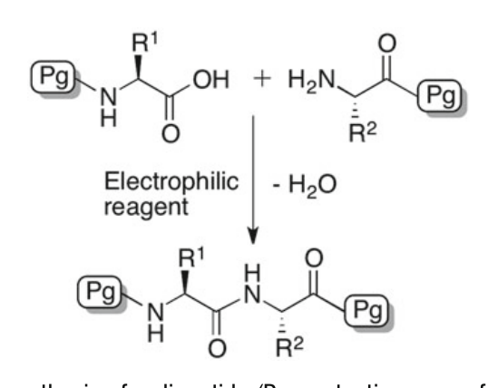
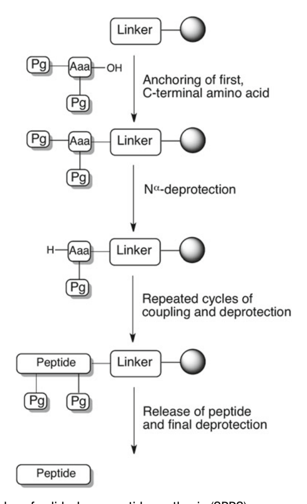
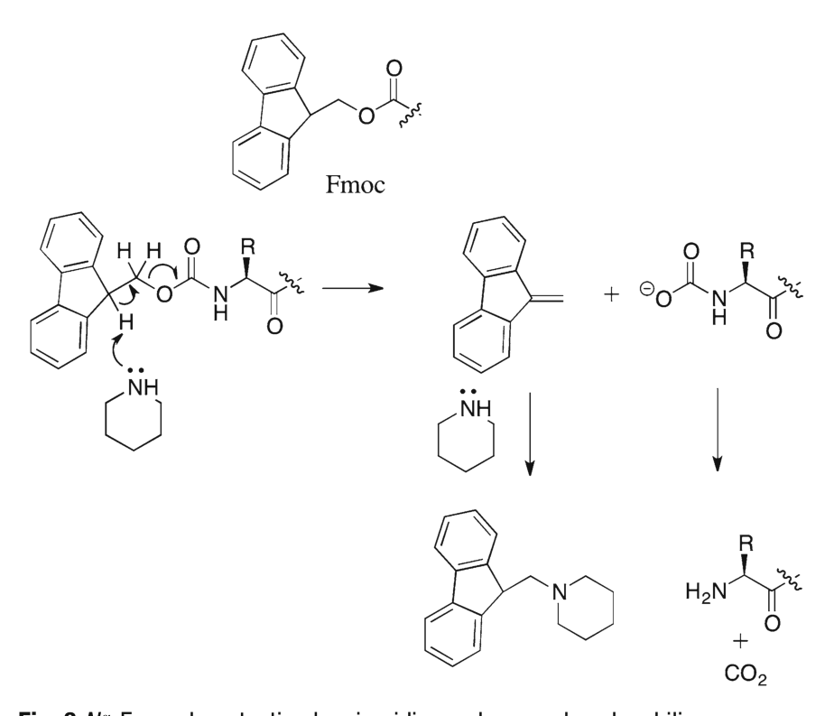
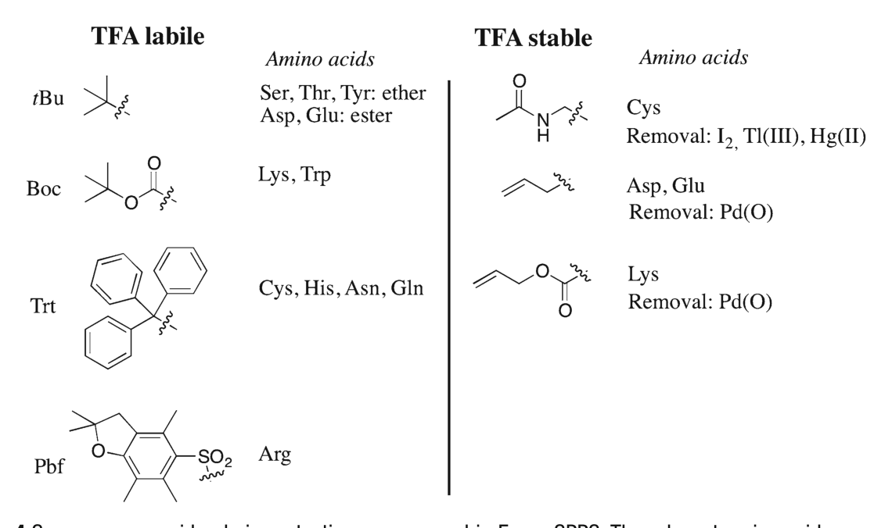
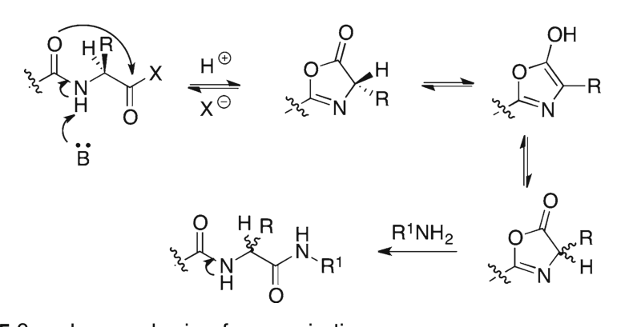
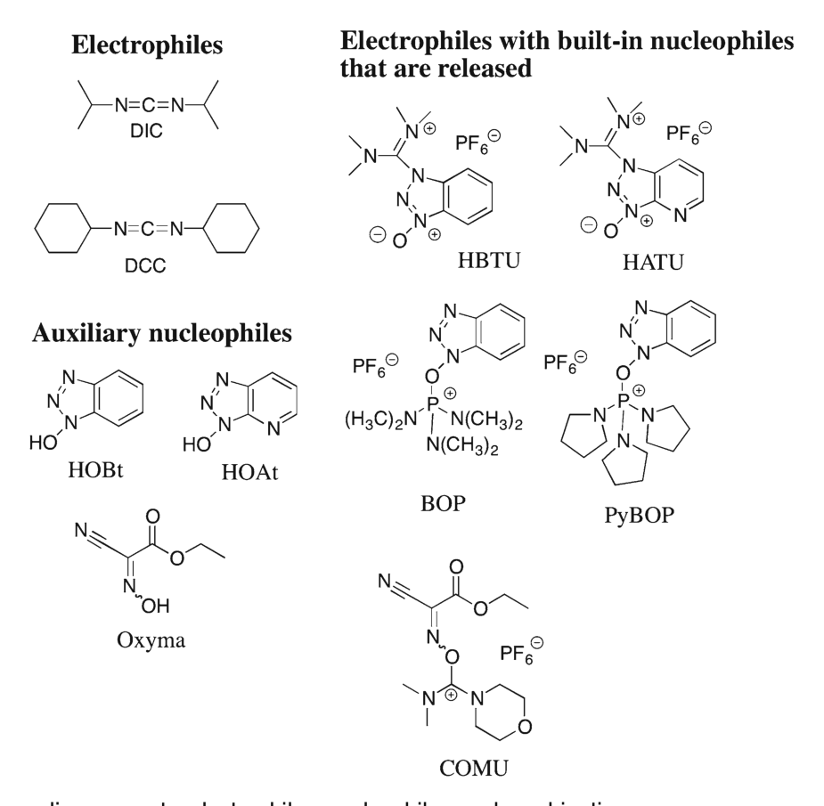
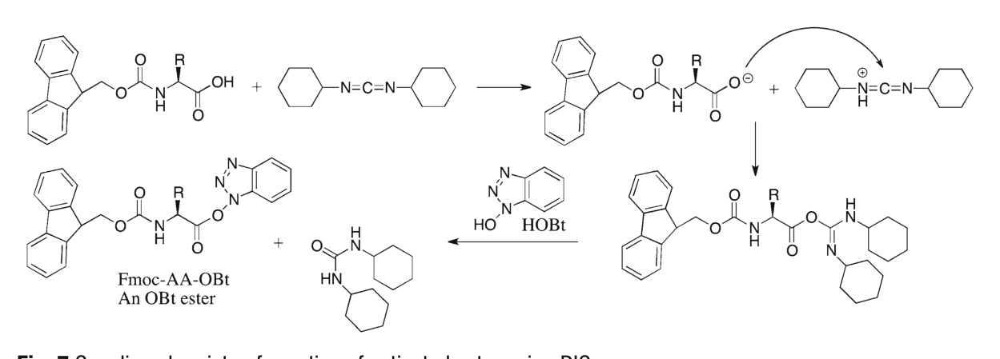
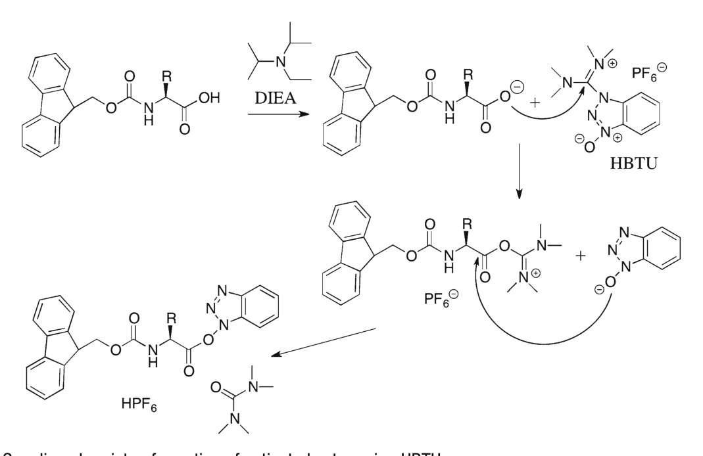
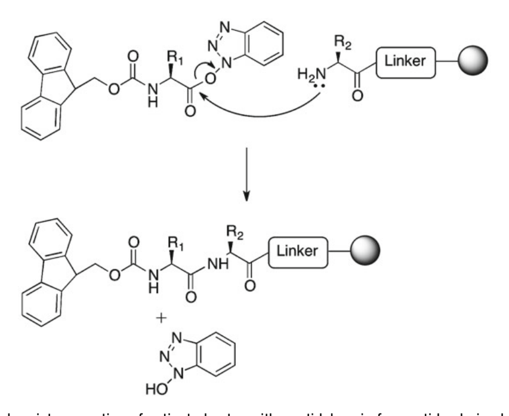

Chapter 1 Solid-Phase Peptide Synthesis: An Introduction
《Peptide Synthesis and Applications》(2013, Humana)
Methods in Molecular Biology, vol. 1047
作者：Knud J. Jensen
本章提供了肽化学的入门介绍和全面概述，重点关注固相肽合成 (Solid-Phase Peptide Synthesis, SPPS)。内容涵盖SPPS的背景历史、最常用的试剂及其反应机理。同时，本章还指向全书其他章节，将各个专题置于整体框架中。
关键词：
固相肽合成 (SPPS)、Fmoc、Boc、连接臂 (Linkers)、偶联试剂 (Coupling reagents)、HBTU、HATU、COMU、HOBt、HOAt、Oxyma、BAL
| 缩写 | 全称 / 中文 |
|---|---|
| Acm | Acetamidomethyl（乙酰氨基甲基） |
| BAL | Backbone Amide Linker（骨架酰胺连接臂） |
| Boc | tert-Butyloxycarbonyl（叔丁氧羰基） |
| BOP | Benzotriazol-1-yl-N-oxy-tris(dimethylamino)phosphonium hexafluorophosphate |
| Cbz/Z | Benzyloxycarbonyl（苄氧羰基） |
| COMU | 1-[(1-(Cyano-2-ethoxy-2-oxoethylideneaminooxy)-dimethylamino-morpholinomethylene)] methanaminium hexafluorophosphate |
| DIC | N,N'-Diisopropylcarbodiimide（N,N'-二异丙基碳二亚胺） |
| DIEA | N,N-Diisopropylethylamine（N,N-二异丙基乙胺，Hünig碱） |
| DMF | N,N-Dimethylformamide（N,N-二甲基甲酰胺） |
| Fmoc | Fluoren-9-ylmethyloxycarbonyl（9-芴甲氧羰基） |
| HATU | N-[(Dimethylamino)-1H-1,2,3-triazole[4,5-b]pyridine-1-ylmethylene]-N-methylmethanaminium hexafluorophosphate N-oxide |
| HBTU | N-[(1H-Benzotriazol-1-yl)(dimethylamino)methylene]-N-methylmethanaminium hexafluorophosphate N-oxide |
| HOBt | 1-Hydroxybenzotriazole（1-羟基苯并三唑） |
| HOAt | 3-Hydroxy-3H-1,2,3-triazolo[4,5-b]pyridine（1-羟基-7-氮杂苯并三唑） |
| NHS | N-Hydroxysuccinimide（N-羟基琥珀酰亚胺） |
| NMP | N-Methyl-2-pyrrolidinone（N-甲基-2-吡咯烷酮） |
| Pbf | 2,2,4,6,7-Pentamethyl-dihydrobenzofuran-5-sulfonyl |
| Pfp | Pentafluorophenyl（五氟苯基） |
| PyBOP | 1-Benzotriazolyloxy-tris-pyrrolidinophosphonium hexafluorophosphate |
| TFA | Trifluoroacetic acid（三氟乙酸） |
| TFMSA | Trifluoromethanesulfonic acid（三氟甲磺酸） |
| Trt | Trityl / Triphenylmethyl（三苯甲基） |
合成肽在生物学、生物医学、药物发现等众多领域中无处不在。化学合成的肽有非常多样化的用途，包括：
• 生物制药 (biopharmaceutical drugs)
• 表位作图 (epitope mapping)
• 肽微阵列 (peptide microarrays)
• 疫苗开发 (vaccine development)
虽然蛋白质通常通过重组DNA技术 (recombinant methods) 制备，但化学合成是制备肽的主要方法。这是因为化学合成具有以下优势：
• 操作简便、可预测性强
• 灵活性高——可以方便地引入非蛋白原性修饰 (non-proteinogenic modifications)
• 规模可从实验室级别到吨级 (ton scale)
然而，肽合成也存在局限性。理解可能性和局限性，才能最优地利用肽在研究和开发中的作用。
肽合成历史关键事件：
• 1901年：Emil Fischer 报道了第一条肽的合成
• 1932年：Leonidas Zervas 开发了Z (Cbz) 保护基
• 1955年：Vincent du Vigneaud 因化学合成环肽催产素 (oxytocin) 获诺贝尔奖
• 1963年：Robert Bruce Merrifield 引入固相肽合成 (SPPS) 概念并首次实现 [1,2]
• 1984年：Merrifield 因SPPS获诺贝尔化学奖
氨基酸至少携带两个官能团（氨基和羧基）。当需要将两个氨基酸通过酰胺键 (amide bond，即"肽键" peptide bond) 偶联时，必须保护其中一个Nα-氨基和一个羧基。

Figure 1. 二肽的液相合成 (Pg = Nα-氨基保护基)
对于双官能团氨基酸 (bifunctional amino acids) 如 Gly、Ala、Leu，每个氨基酸只需要一个保护基。而对于三官能团氨基酸 (trifunctional amino acids)，则需要侧链保护基 (side-chain protecting groups) 来保护：
• 羧基：Asp、Glu
• 氨基：Lys
• 巯基：Cys
• 羟基：Ser、Thr、Tyr
• 咪唑基：His
• 吲哚基：Trp（有时需要）
这些侧链保护基需要在合成结束时去除。
液相合成中常用的保护基包括苄基 (benzyl) 衍生物，它们可以通过氢解 (hydrogenolysis，即在催化剂存在下用氢气处理) 方便地去除。
经典的苄氧羰基 (Cbz/Z) 保护基——1932年由Bergmann和Zervas首次报道 [3]，是第一个氨基甲酸酯 (carbamate) 型保护基系列的代表。其策略为：
• 一个氨基酸的Nα-氨基用Cbz保护
• 另一个氨基酸的羧基用苄酯 (benzyl ester) 保护
• 偶联形成酰胺键后，两种保护基可以一步同时去除
不仅两个氨基酸可以在液相中偶联，两个肽段也可以在液相中偶联——这被称为片段缩合 (segment condensation)。
片段缩合的要求：
• 两个肽段的所有侧链都必须被保护
• 一个肽段有游离的C端羧基，另一个有游离的N端氨基
• 通过酰胺键形成进行偶联
注意事项：
• 保护的肽段可能溶解度低 (low solubility)，需要大量优化
• C端氨基酸存在消旋化 (epimerization) 风险——因为其氮是酰胺氮而非氨基甲酸酯氮，消旋化风险更高
两个未保护的肽段可以通过高度化学选择性的反应偶联——即自然化学连接 (NCL) [4]：
• 一个肽段的C端为硫酯 (thioester)
• 另一个肽段的N端必须是Cys残基
• 反应通过转硫酯化 (transthioesterification) 进行，最终形成"天然"酰胺键
• 详见本书 Chapter 7 (NCL) 和 Chapter 8 (硫酯合成)
此外，未保护肽段也可以通过非天然键连接，如：
• 肟连接 (oxime ligation) [5,6]——需要肽醛 (peptide aldehydes)，详见Chapter 9
• 三唑形成 (triazole formation)——点击化学
Merrifield引入功能化固相载体 (solid support) 来锚定氨基酸，彻底革新了肽科学领域，开创了SPPS方法论。自1960年代首次报道以来，SPPS的各个方面都得到了进一步发展和完善。
关于术语的说明：
"固相合成"(solid-phase synthesis) 一词虽然被广泛使用，但更精确的术语可能是"基质辅助合成" (matrix assisted synthesis)，因为最常用的树脂实际上并非刚性的固体 [7,8]。
SPPS的主要特征：
1. 第一个构建块 (building block) 通过可断裂的手臂连接 (anchored) 到可过滤的基质上
2. 重复进行化学转化循环（脱保护-偶联），可实现自动化
3. 最终产物通常从基质上释放并同时脱保护
通过合理选择保护基和连接臂，肽也可以：
• 在保持连接到载体的情况下进行侧链脱保护
• 以完全保护的形式从载体上释放

Figure 2. 固相肽合成 (SPPS) 原理示意图
SPPS的定义要素：
• Nα-保护基
• 侧链保护基
• 偶联试剂
• 连接臂/把手 (Linkers/Handles)
• 固相载体 (Solid supports)
合成方向与规则：
• 氨基酸以 N←C 方向逐个偶联到生长的肽链上
• 通常先将C端氨基酸的羧基通过可断裂的连接臂锚定到树脂上
• 然后去除Nα-保护基（不影响侧链保护基），为下一个偶联循环做准备
• 使用过量可溶性试剂驱动反应至完成，通过过滤和洗涤去除多余试剂
• 完成所需序列后，从固相载体上释放肽，同时去除半永久性侧链保护基
画图规范：
蛋白质/肽以N端在左、C端在右的方式描绘。因此在进行SPPS反应时，树脂应放在右侧。
SPPS中两种最常用的Nα-保护基是：
• Fmoc (Fluoren-9-ylmethyloxycarbonyl，9-芴甲氧羰基) [9,10]
• Boc (tert-Butyloxycarbonyl，叔丁氧羰基)
每种Nα-保护基定义了一个完整的SPPS总体策略。去除这些瞬时保护基的化学条件（碱 vs. 酸）各自定义了一个"化学窗口" (chemical window)，决定了其他步骤可选用的条件。

Figure 3. Fmoc保护基在哌啶 (piperidine) 作用下的脱保护机理——哌啶同时作为碱和亲核清除剂
• 由Merrifield最初引入
• 用三氟乙酸 (TFA) 反复去除Boc基团
• 最终切肽通常使用氢氟酸 (HF)
• 依赖于Boc与载体连接之间的梯度酸不稳定性 (graduated acid-lability)
• HF具有腐蚀性和毒性，需要专门的装置 → Fmoc策略通常更受青睐
• Fmoc基团可以在温和条件下用仲胺去除，通常使用20%哌啶的DMF溶液 (1:4)
• Fmoc-SPPS展现出正交性 (orthogonality) [15]：
- Fmoc去除条件（哌啶/DMF）与切肽条件（通常TFA）相互正交
- 这意味着切肽时使用的酸不会影响Fmoc的去保护逻辑
本书重点：
• Fmoc-SPPS标准方案 → Chapter 2 和 Chapter 3
• Boc-SPPS方案 → Chapter 4
Fmoc-SPPS中的半永久性侧链保护基在过去几十年中得到了广泛开发 [16]。

Figure 4. Fmoc-SPPS中常用的侧链保护基。左列可用浓TFA去除，右列对TFA稳定需其他条件去除
标准侧链保护基：
• Glu, Asp: tert-butyl (t-Bu) 酯
• Ser, Thr, Tyr: tert-butyl (t-Bu) 醚
• Arg: Pbf (2,2,4,6,7-Pentamethyl-dihydrobenzofuran-5-sulfonyl) [17]
• Cys, Asn, Gln, His: Trt (Trityl, 三苯甲基)
Trt衍生物的可调性：
Trt中苯环上的取代基可方便地修饰（引入吸电子或给电子基团），从而微调保护基的性质。例如，单甲基和单甲氧基三苯甲基 (Mmt, MMT) 是Lys Nε-胺的酸不稳定保护基 [18]。
有些保护基在最终切肽条件下不会被去除，包括：
Cys的Acm保护基：
• 乙酰氨基甲基 (Acetamidomethyl, Acm)
• 可用重金属盐（如三氟乙酸铊 Tl(TFA)₃）或更环保的碘 (I₂) 选择性去除
• Acm去除条件与其他保护基正交 → 可用于多对二硫键的定向、顺序形成
• 同时适用于Boc-和Fmoc-SPPS
Lys的选择性去除保护基：
• Alloc (烯丙氧羰基) [19]——Pd(0)催化去除
• MMT (单甲氧基三苯甲基) [20]
• Dde [21] 和 ivDde——肼溶液去除
Glu的选择性去除保护基：
• Allyl (烯丙基)
• PhiPr (2-苯基异丙基) [22]
氨基酸的羧基必须被活化才能与生长肽链的Nα-氨基反应。第一步是与亲电试剂反应（有时在碱存在下进行）。
碳二亚胺型偶联试剂如DCC或DIC (N,N'-二异丙基碳二亚胺) 已使用数十年。

Figure 5. 噁唑酮 (Oxazolone) 机理导致的消旋化
碳二亚胺的潜在副反应：
• O-酰基异脲 (O-acylisourea) 中间体的O→N重排
• "过度活化"形成对称酸酐 (symmetrical anhydride)，可能导致消旋化 (epimerization)
解决方案——添加辅助亲核试剂 (Auxiliary Nucleophiles)：
• HOBt：1-Hydroxybenzotriazole（1-羟基苯并三唑）[23]——形成相应的活性酯，保持光学纯度
• HOAt：1-Hydroxy-7-azabenzotriazole（1-羟基-7-氮杂苯并三唑）[24]——分子内碱催化效应，活性更高
• Oxyma：Ethyl 2-cyano-2-(hydroxyimino)acetate [25]——HOBt的替代品，爆炸风险更低
在自动化合成中，DIC优于DCC：
• DIC是液体（易于自动化处理）
• 产生的脲 (urea) 副产物可溶
为缩短偶联时间和减少消旋化，开发了多种"原位"偶联试剂：

Figure 6. 常用偶联试剂：亲电试剂、亲核试剂及其组合
• HBTU：最初报道为uronium盐，实际以aminium盐（guanidinium N-oxide）形式结晶 [31,32]
• HATU：含7-azabenzotriazole结构，活性更高 [27,28]
• PyBOP：不产生有毒副产物 [29]
• COMU：含Oxyma结构，高效但易水解 [30,33]——溶液需新鲜配制或惰性气体保护
虽然肽段通常通过原位活化组装，但预活化的氨基酸构建块也是一种可行的选择：
• 五氟苯酯 (Pentafluorophenyl, Pfp esters) [34]——部分Fmoc-氨基酸的Pfp酯有商品化或易于制备
- 偶联时需添加辅助亲核试剂（如HOBt）生成瞬间的OBt酯
• N-羟基琥珀酰亚胺酯 (NHS esters)——主要用于水溶液中的酰胺键形成，不用于固相

Figure 7. 使用DIC形成活性酯的偶联化学

Figure 8. 使用HBTU形成活性酯的偶联化学

Figure 9. 活性酯与肽基树脂 (peptidyl-resin) 反应实现肽链延伸
精确的微波辐照在偶联和Nα-脱保护期间加热反应混合物已变得越来越流行。
• 显著缩短合成时间
• 提高粗肽纯度
• 对形成β-片层结构的序列和空间位阻大的偶联特别有效
• 系统研究表明微波效应本质上是热效应
• 微波加热并非万能——对Cys、His、Asp的掺入及磷酸肽、糖肽、N-甲基化肽的合成可能需要调整条件
• 详见Chapter 10、15、16、17
虽然肽合成大多数情况下是成功的，但某些氨基酸容易发生副反应，这也可以视为当前保护和偶联化学的局限性。
• Arg (Pbf保护)：Pbf切割时产生的Pbf亲电试剂可烷基化附近的Trp吲哚环——不可逆反应。可用Boc保护Trp的吲哚氮来减轻 [35]
• Asn：易脱水和形成天冬酰亚胺 (aspartimide)——Trt侧链保护可部分解决问题
• Cys：巯基可用多种保护基保护；Trt可用酸解去除，Acm对酸碱稳定但可用重金属盐或I₂去除；Cys掺入时可能发生消旋化 [36,37]
• His：Fmoc-SPPS中可能发生差向异构化——Trt侧链保护基通常能有效预防
• Val, Ile：β-分支氨基酸，有时难以定量掺入
肽链越长，出现低纯度甚至失败的概率越高。主要原因：
• 空间位阻 (steric hindrance)
• 分子内和分子间堆积 (intra- and intermolecular packing)
• 易形成β-片层的氨基酸在链延伸过程中导致聚集 (aggregation)
• 分子间聚集导致肽基聚合物溶胀不良 → 使用低载量 (low loading) 树脂可减轻
• 最常见的SPPS树脂基础材料
• 通常含1%交联度
• Merrifield树脂 (氯甲基-聚苯乙烯) 是许多其他树脂的起始材料
• 氨甲基-聚苯乙烯 (Aminomethyl-PS) 是另一个重要的基础树脂
• 在聚苯乙烯核上接枝PEG链
• 代表：TentaGel (Rapp Polymere, Germany)——PEG链末端携带氨基
• PEG功能化遍及整个树脂珠内部，不仅限于表面
• 对较长序列和易聚集肽通常提供更高纯度
• 不含聚苯乙烯，通过PEG链交联构成
• PEGA支持体 [38]——可渗透35-70 kDa的蛋白质，适合生化研究
• ChemMatrix树脂 [39]——在标准Fmoc-SPPS中越来越重要
• 详见Chapter 2
连接臂 (linker) 或把手 (handle) 是双官能团分子：
• 一侧用于锚定到固相载体
• 另一侧具有保护基的特性——可在SPPS过程中锚定生长的肽链，并在明确条件下释放最终产物
C端羧酸肽的连接臂：
• Wang型 (4-烷氧基苄醇) 连接臂——最常用的选择
- 第一个氨基酸通过酯化偶联到Wang型连接臂
- 注意酯键形成时可能的消旋化
- 用浓TFA切肽
• 二烷氧基苄基结构——更高的酸不稳定性，可用更低浓度TFA切肽
• 三苯甲基型连接臂 (如Barlos的氯代三苯甲基氯连接臂)——更高的酸不稳定性，第一个氨基酸通过亲核取代无消旋化锚定
C端酰胺肽的连接臂：
• Rink Amide连接臂（二苯甲烷型）——最常用，多数树脂可预装
• PAL (Peptide Amide Linker) 连接臂 [46,47]——三烷氧基苄基结构
BAL (Backbone Amide Linker) 策略 [48,49]：
• 用于C端修饰肽和环肽的通用策略
• 肽链不通过C端羧基锚定，而通过"空缺的"骨架酰胺氮锚定
• 第一个氨基酸通过还原胺化 (reductive amination) 锚定
• 然后通过酰化新形成的二级胺锚定第二个氨基酸
• 可用于合成肽醛 [50]、肽硫酯 [51]、环肽等
• 主要用于Fmoc-SPPS，也可适配Boc-SPPS [52]
• 详见Chapter 9
侧链锚定策略：
第一个氨基酸通过侧链官能团锚定到树脂（如Asp/Asn、Glu/Gln或其他三官能团氨基酸）。
Fmoc-SPPS中切肽通常使用TFA：
• 多数树脂在TFA中溶胀良好
• 肽通常溶于TFA
• TFA易挥发，便于蒸发去除
切肽时产生的碳正离子 (carbocations) 可引起副反应：
• tert-butyl阳离子——5%水即可清除
• 三苯甲基阳离子——需加硅烷 (TES, TIS) 清除
• 其他阳离子——需加硫醇清除
• Pbf阳离子可烷基化Trp——需特别注意
• 详见Chapter 3
离去基团能力顺序 (递减)：
磺酰胺 > 氨基甲酸酯 ~ 脲 > 二级（取代）酰胺 > 一级酰胺 > 胺
多种连接臂通过亲核取代释放肽，可在此时引入C端官能团：
HMBA连接臂：
• 4-羟甲基苯甲酸 (4-Hydroxymethylbenzoic acid)
• 肽通过酯键锚定
• 用亲核试剂（如氢氧根）释放
• 与PEGA树脂配合使用效果最佳
安全捕获连接臂 (Safety-Catch Linker) [53,54]：
• 基于磺酰胺
• 第一个氨基酸通过酰化磺酰胺锚定
• Fmoc-SPPS过程中稳定
• 通过N-烷化"激活"后，可被亲核取代
• 特别适合肽硫酯合成——用硫醇释放
• 详见Chapter 8
| 连接臂 | 离去基团 | 磺酰胺 | 脲 | 氨基甲酸酯 | 酰胺 | 苯胺 | 胺 |
|---|---|---|---|---|---|---|---|
| 二烷氧基苄基 BAL | 条件 | TFA-DCM 5:95, 5 min | TFA-TES 97.5:2.5, 15 min | TFA-DCM 1:19 | TFA-DCM 3:7, 10 min | — | — |
| 三烷氧基苄基 BAL | 条件 | TFA-CHCl₃-H₂O 50:50:1, 1h | 同左 | TFA-DCM 5:95~1:99, 1-2h | TFA-H₂O 19:1, 2h | TFA-DCM 95:5, 16h | — |
| 吲哚 BAL | 条件 | TFA-DCM 1:99, 3 min | TFA-DCM 1:99, <2 min | TFA-DCM 1:99, 1 min | TFA-DCM 1:99, 8h | — | — |
酰胺N-H中的氢被烷基取代时，不仅消除一个潜在的氢键供体，还会改变酰胺键的顺反平衡 (cis-trans equilibrium)，从而影响相邻序列。Pro（脯氨酸）通常被认为是α-螺旋破坏者。
DMB (2,4-二甲氧基苄基) 和 HMB (羟甲氧基苄基)：
• Weygand、Sheppard等人引入 [56-59]
• 用于帮助"困难序列" (difficult sequences) 的合成
• DMB取代的Gly以前一个氨基酸的二肽构建块形式掺入
• 特别适合Gly-Gly和Asp-Gly（防止天冬酰亚胺形成）
• HMB保护氨基酸以单体形式掺入——优选 Fmoc-(Hmb)Gly-OH
• DMB和HMB均为含给电子基团的苄基型，可用TFA去除
• 局限性：成本较高
• Mutter等人引入 [60]
• 是Ser或Thr的噁唑烷 (oxazolidine)（N和O形成环）
• 以二肽形式掺入（如Gly-Ser）
• 噁唑烷环可用含TFA的混合物开环去除
• 有效破坏β-片层结构，改善合成效率
二硫键为肽或蛋白的线性序列提供共价约束，也可以连接两条肽链。以胰岛素为例：三条二硫键中一条为链内 (intrastrand)，两条为链间 (interstrand)。
二硫键形成的独特之处：
• 硫既可以作为亲核试剂也可以作为亲电试剂 (umpolung / 极性反转)
• 二硫键的形成形式上是氧化 (oxidation)，断裂是还原 (reduction)
常用方法：
• 空气氧化 (air oxidation)——最简单的方法，氧气为氧化剂，需要碱性pH，通过鼓入空气实现
• DMSO促进——Tam等人报道DMSO可在pH 3-8范围内促进二硫键形成 [62]
• 各种氧化还原缓冲液 (redox buffers)
• 固载化试剂 (solid-supported reagents)
• 详见Chapter 5
肽和蛋白的翻译后修饰在自然界中无处不在，包括：
• 磷酸化 (phosphorylation)
• O-和N-糖基化 (glycosylation)
• 法尼基化 (farnesylation) 和棕榈酰化 (palmitoylation)
• 谷氨酸的γ-羧化 (γ-carboxylation)
• Fmoc保护的磷酸化Ser和Thr构建块有商品化
• 磷酸基上带单个O-苄基保护基
• 可在标准Fmoc-SPPS中使用，但需延长脱保护时间
• 详见Chapter 13
• 部分Fmoc保护的O-或N-糖基化氨基酸有商品化
• 通常含单糖、二糖或三糖
• 糖链最常用O-乙酰基或O-苯甲酰基酯保护
• 合成完成后用稀甲醇钠/甲醇溶液去除
• 注意：β-消除是可能的副反应——糖链脱落后留下脱氢丙氨酸 (dehydroalanine)
• 详见Chapter 14
• 法尼基 (farnesyl)、香叶基香叶基 (geranylgeranyl) 和棕榈酰基 (palmitoyl) 修饰
• 一直是专业人员的领域，但Chapter 12提供了详细方案
• 简单的酰基化也可引入——如序列中只有一个Lys时，可在固相上或切肽后选择性酰化Lys的Nε-胺
SPPS非常适合自动化，商业化自动肽合成仪的发展已达到很高的可预测性和重现复性。
仪器分类：
• 半自动系统——自动洗涤和Fmoc去保护
• 全自动合成仪——无需人工干预即可组装整个序列
• 并行合成仪——可同时制备大量肽
• 微波辅助合成仪——精确微波加热
• 详见Chapter 15（仪器概述）、Chapter 16（Biotage微波合成）、Chapter 17（CEM微波合成）
理解SPPS的可能性和当前局限性是设计肽类生化、生物医学和生物物理研究的良好起点。
现状总结：
• 15-20个氨基酸长度的肽通常可以从专业合成公司方便地获得
• 更长的肽、含异常氨基酸的肽、带翻译后修饰的肽仍存在挑战
• 多家仪器制造商提供自动肽合成仪，非专业人员也可使用
• 本书描述了广泛的Fmoc-SPPS方案，并包含一章Boc-SPPS
1. SPPS由Merrifield于1963年引入，1984年获诺贝尔化学奖，是肽合成的主导方法
2. 两种主要策略：Fmoc（碱脱保护，温和）和Boc（酸脱保护，需HF切肽）
3. Fmoc-SPPS因正交性（哌啶去Fmoc vs TFA切肽）而更受青睐
4. 侧链保护基需与Nα-保护策略匹配——t-Bu类/Pbf/Trt是Fmoc-SPPS标准
5. 偶联试剂：碳二亚胺(DIC)+辅助亲核试剂(HOBt/HOAt/Oxyma) 或 鎓盐(HBTU/HATU/COMU)
6. 消旋化的主要机理是噁唑酮 (oxazolone) 形成
7. 连接臂选择决定C端功能——Wang(酸)、Rink Amide(酰胺)、CTC(酸,低酸稳定性)、BAL(C端修饰)
8. 困难序列问题：β-片层聚集 → 可用假脯氨酸、DMB/HMB骨架保护、低载量树脂、微波加热
9. 二硫键形成：空气氧化、DMSO法、氧化还原缓冲液；Acm正交保护用于多对二硫键
10. 翻译后修饰可通过特殊构建块引入：磷酸肽、糖肽、脂肽